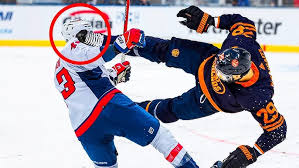

Hockey is one of the fastest and most physical sports in the world. Big hits can change games instantly, but they can also cause serious injuries.
This website talks about body checks, dangerous hits, concussions, and player safety in hockey.

Hockey is a sport that requires speed, strength, balance, and teamwork. Players often collide during games while fighting for the puck or defending their teammates. Physical contact is an important part of hockey, but it can sometimes lead to dangerous situations on the ice.
Many hockey fans enjoy watching hard body checks because they can change the momentum of a game. A clean hit can stop an opponent, create turnovers, and energize the crowd. However, illegal hits to the head or hits from behind can seriously injure players.

Concussions are one of the biggest concerns in modern hockey. A concussion is a brain injury caused by a strong impact to the head or body. Symptoms can include headaches, dizziness, confusion, and memory problems. Because of this, leagues now take concussions much more seriously than they did in the past.

Professional hockey leagues like the National Hockey League (NHL) continue to improve player safety rules. Referees review dangerous plays and give penalties or suspensions when necessary. Coaches also teach players safer ways to check opponents without causing injuries.
Protective equipment is another important part of hockey safety. Helmets, shoulder pads, gloves, shin pads, and mouth guards all help reduce the risk of injury. Even with equipment, hockey remains a very physical and intense sport.